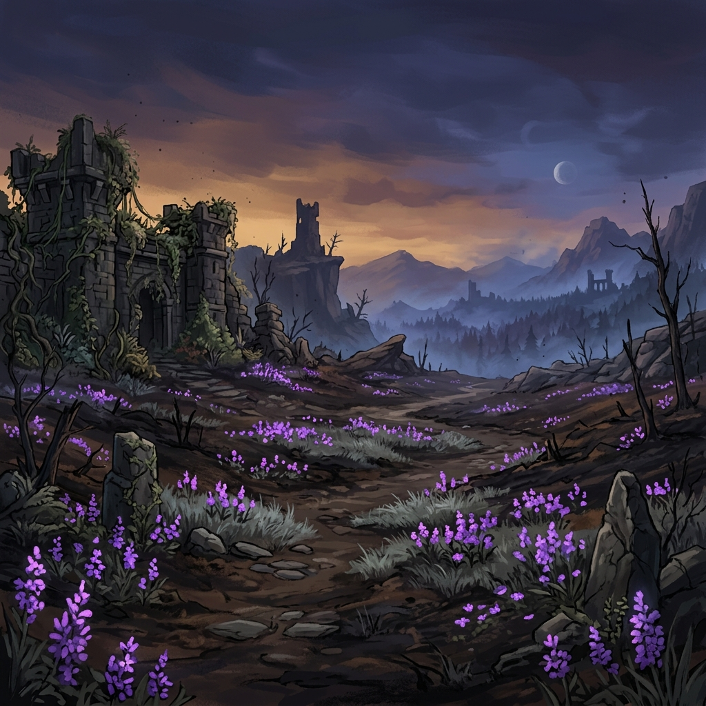
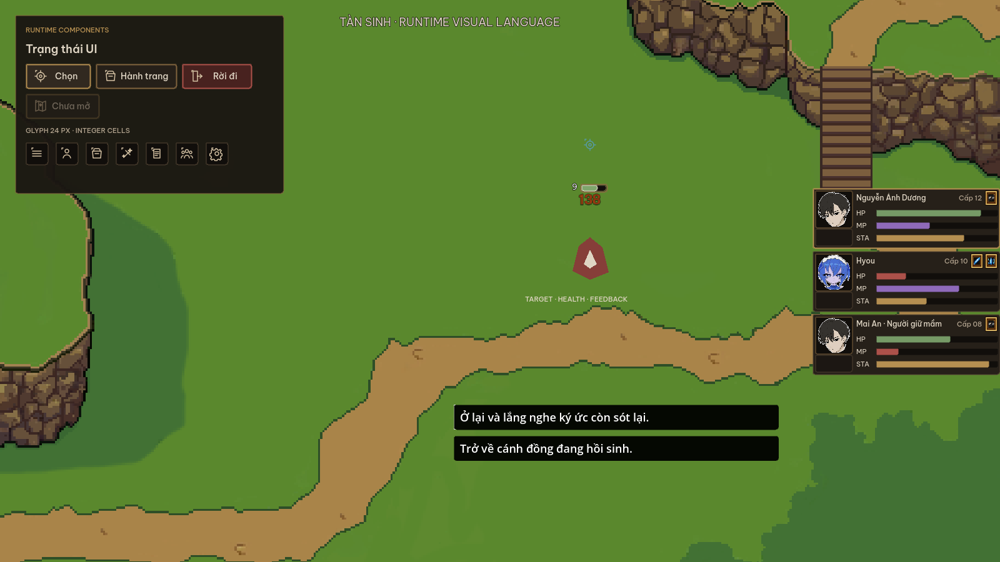
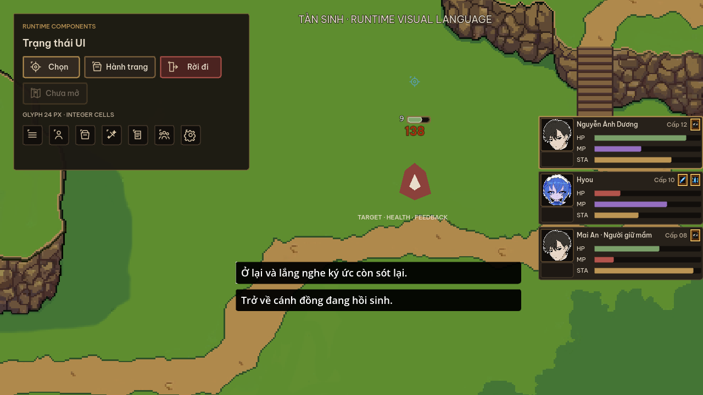
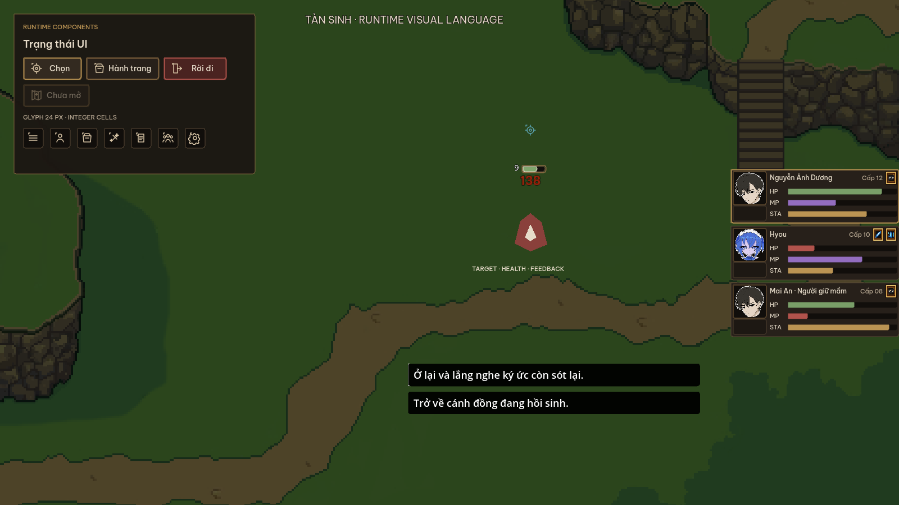

Sống ở bề mặt
Đồng cỏ xanh, hoa rực, nước và phép thuật sáng. Mỗi biome giữ palette riêng thay vì bị ép về xám nâu.
Visual Language · UI/HUD
Thế giới vẫn đẹp và sống động trong khi phần cốt lõi bên dưới đang dần tàn đi.
01 · Luận đề
“Tàn” không phải một filter phủ lên map. Nó nằm trong cấu trúc, vật liệu và trạng thái; cảnh quan vẫn có quyền xanh, sáng và bão hòa.
Đồng cỏ xanh, hoa rực, nước và phép thuật sáng. Mỗi biome giữ palette riêng thay vì bị ép về xám nâu.
Than lì, đồng xỉn, khoảng tối, cạnh xói nhẹ và trạng thái mất màu. Mỗi dấu hiệu đều phải có lý do.
Ánh vàng và trắng ấm dành cho focus, lựa chọn, hồi phục và khoảnh khắc giành lại quyền kiểm soát.

World contrast
Sự sống phải hiện diện thật. Hoa, cỏ và ánh trời không bị giảm màu chỉ vì tên game. UI tạo vùng đọc cục bộ bằng scrim và panel.
Thành phố, đồng cỏ, hang động hay vùng băng đều giữ bản sắc riêng.
02 · Color
Nhấn vào swatch để copy mã màu. Màu semantic không được dùng chỉ để trang trí.
Neutral chiếm phần lớn diện tích. Accent chỉ dẫn focus; Life, Memory, Ice và Danger chỉ xuất hiện khi đúng semantic.
Mọi màu resource/status đi cùng label, glyph hoặc pattern. Không buộc người chơi phân biệt chỉ bằng hue.
03 · Typography
Be Vietnam Pro được bundle trực tiếp. Không gọi Google Fonts, không dùng Cinzel hoặc IM Fell English.
| Role | Specimen | Face / Size |
|---|---|---|
| Screen title | Tàn Sinh | SemiBold · 24 px |
| Section title | Ký ức trong tro | SemiBold · 18 px |
| Body | Sự sống vẫn xanh trên một thế giới đang phai dần. | Regular · 14 px |
| Label | NHIỆM VỤ ĐANG THEO DÕI | Medium · 12 px |
| Micro | Cấp 08 · Ký ức 64% | Medium · 11 px |
| Combat | 1.248 | SemiBold · 20 px |
04 · Shape & Material
Khối chữ nhật ổn định, radius 3 px, border 1 px; focus 2 px nhưng không làm geometry nhảy.
Canvas, scrim và panel. Không glossy, không bokeh, không texture dày.
Border/focus ít bão hòa. Không biến thành khung vàng trang sức.
Disabled và depleted giảm saturation/contrast nhưng vẫn giữ chữ đọc được.
Map và hồi phục giữ màu tự nhiên. Không phủ nâu để ép chung palette UI.
05 · Grid & Asset
Không thu asset 500-1400 px xuống icon/HUD nhỏ. Dựng native bằng Control, StyleBox và atlas nguyên cell.
Shared glyph atlas · 24 px cells · 1-2 px stroke

06 · Value hierarchy
Persistent HUD lùi lại. Telegraph và cửa sổ phản ứng được quyền sáng nhất, nhưng chỉ trong thời gian cần thiết.
07 · Runtime components
Mỗi screen giữ cấu trúc riêng nhưng cùng token, typography, glyph và interaction state.
Neo phải, 300×97 mỗi unit, portrait độc lập, name/level/resource/status là node riêng. Status space luôn được reserve.
Native trough/fill/frame, level và status riêng. Boss/elite phải có variant hình học, không chỉ phóng to.
Cảnh thế giới sống động ở first viewport. Chỉ sáu feature đang hoạt động và mỗi feature có glyph riêng.
Tab theo nội dung, filter thật, empty state thật, không tiền/item/tên giả.
Dùng shared chrome, focus visible, option/slider/toggle có tác dụng runtime thật.
Choice 360-520 px, wrap, overflow scroll. Choice ngắn bám textbox; focus cuối tự cuộn vào view.



Cả ba preview được chụp từ scene runtime, không hand-compose. Grade đêm chỉ là fixture kiểm tra khả năng đọc, không biến map thành thế giới hoang tàn. Portrait artwork nằm ngoài phạm vi chỉnh sửa của tài liệu này.
08 · VFX & Motion
Visual tail không được làm người chơi tưởng hitbox còn active. Motion không làm control đổi kích thước.
Silhouette vùng ảnh hưởng xuất hiện trước particle. Opacity/scale tăng đều; danger có pattern hoặc cạnh riêng.
Core và điểm va chạm sáng hơn trail. Hit-stop và shake không che input cue.
Chuyển động tan theo vector hành động, giảm saturation/opacity trước khi biến mất.
| Token | Duration | Ràng buộc |
|---|---|---|
| Hover / Focus | 80-120 ms | Không đổi geometry |
| Panel enter / exit | 140-220 ms | Không chặn input sau khi hidden |
| Combat feedback | Theo gameplay | Visual tail không đổi frame damage |
09 · Accessibility
Focus, tooltip, contrast và tiếng Việt là tiêu chí hoàn thành, không phải polish sau cùng.
| Semantic | Màu | Fallback |
|---|---|---|
| HP / Life | Life; Danger khi thấp | Nhãn HP, đầu bar vuông |
| MP / Memory | Memory | Nhãn MP, glyph kim cương |
| Stamina | Accent | Nhãn STA, bar phân đoạn |
| Frozen | Ice | Tinh thể và cạnh sắc |
| Danger | Danger | Biểu tượng cảnh báo + copy |
| Selected | Accent | Border 2 px + focus cursor |
Button, tab, OptionButton, slider, toggle và choice nhận keyboard/gamepad focus. Tooltip holder không dùng MouseFilter.Ignore.
Kiểm tra 1600×900, 1280×720, UI scale lớn, tên Việt dài và overlay combat đồng thời.
10 · Production
Mock chỉ dùng để thảo luận. Bằng chứng cuối là scene thật, focus thật, data thật và capture thật.